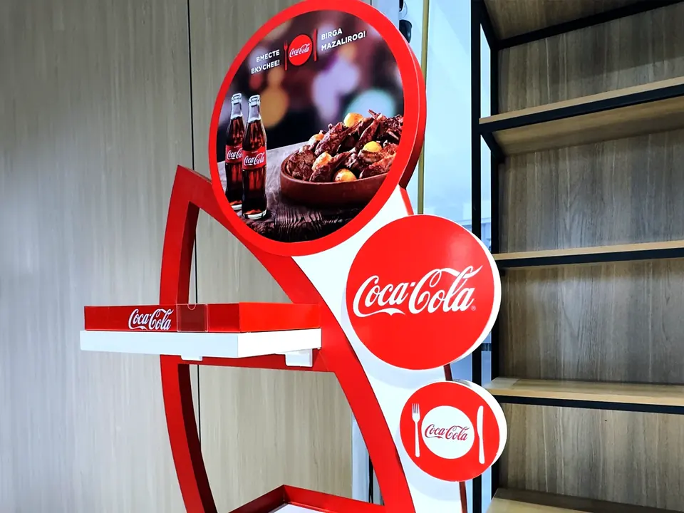
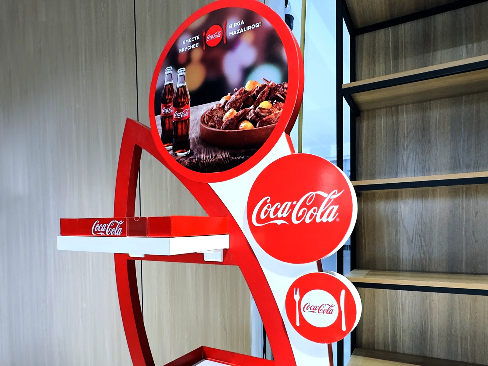
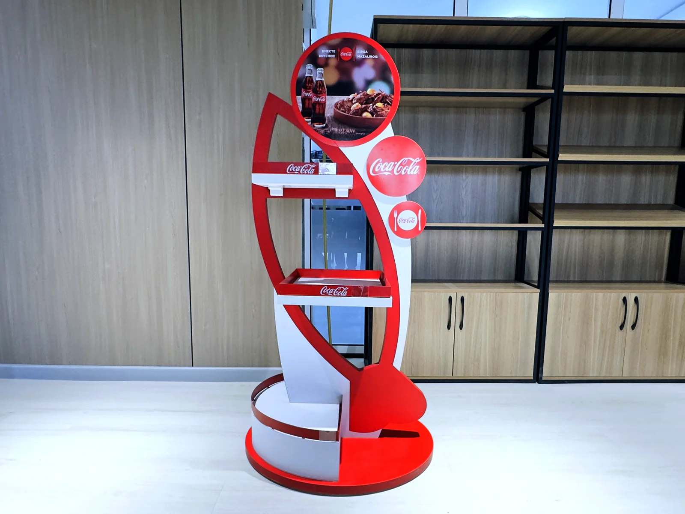
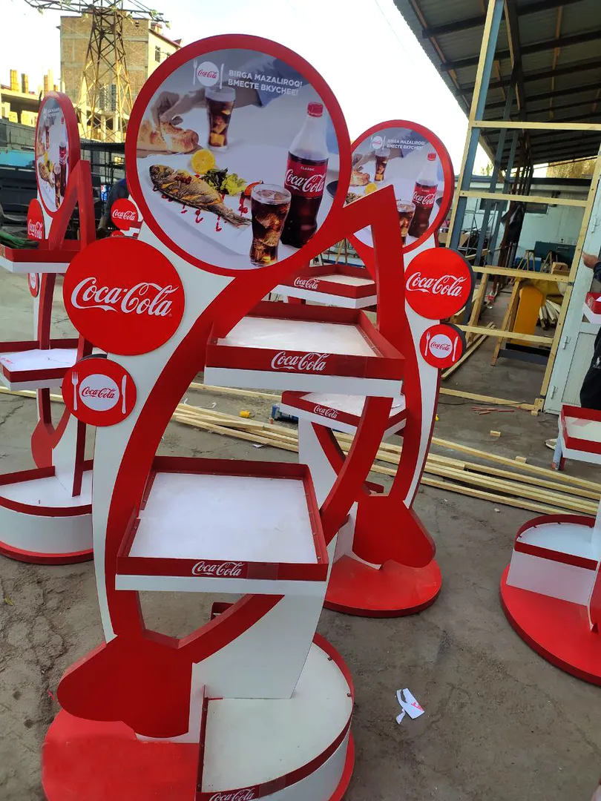
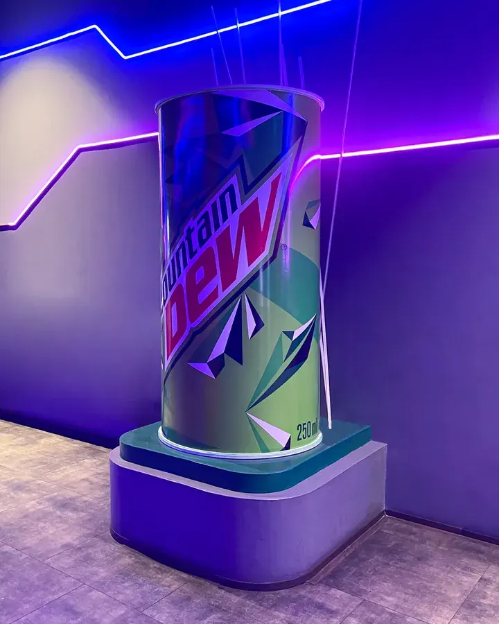
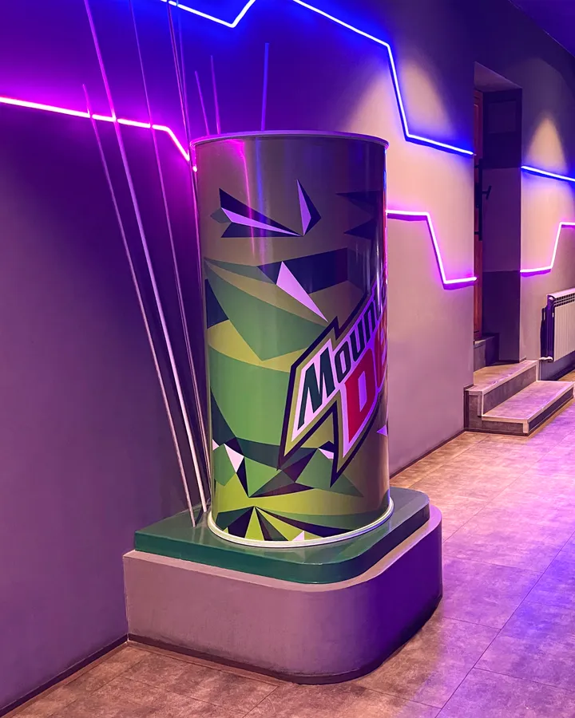
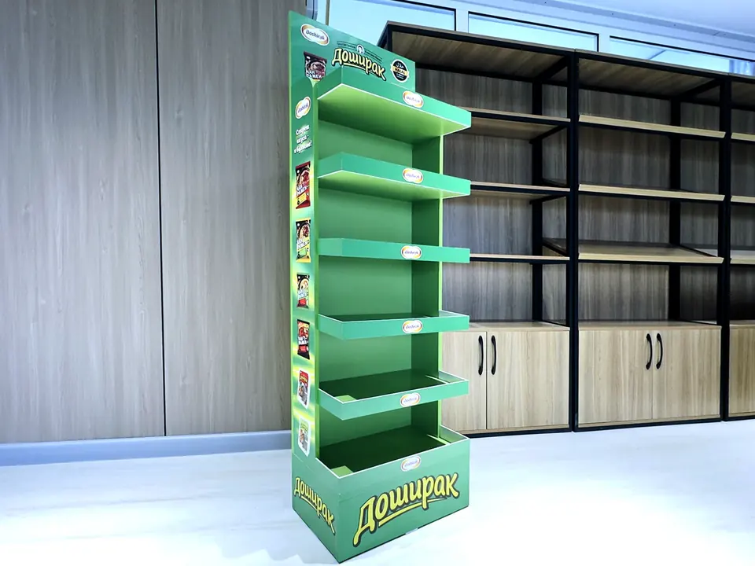

Брендированное торговое оборудование
Coca-ColaПодробнее о проектеCOLOURWAY DESIGN · ТАШКЕНТ
Стойки, дисплеи и промозоны для оформления мест продаж.
Стойки, дисплеи, промозоны и объёмные фигуры для торговых пространств. Помогаем выделить продукт там, где принимают решение о покупке.
Обсудить проект
Уточняем задачу и место размещения, готовим визуальное решение, согласовываем материалы, производим и монтируем изделие.
Стоимость зависит от размеров, конструкции, материалов и особенностей монтажа. Точные параметры согласуем после получения заявки.
Создать макет и отправить заявку
Брендированное торговое оборудование
Coca-ColaПодробнее о проекте
Стойка целиком. Видны круглое основание, открытые полки и рекламная панель над ними.
Coca-ColaПодробнее о проекте
Серия красно-белых стоек с фигурными боковинами и круглыми панелями с логотипом Coca-Cola.
Coca-ColaПодробнее о проекте
Объёмная бренд-инсталляция
Mountain DewПодробнее о проекте
Объёмная банка на подиуме с бокового ракурса. Цветная подсветка подчёркивает форму и фирменную графику.
Mountain DewПодробнее о проекте
Стойка для выкладки продукции
ДоширакПодробнее о проектеОткройте фотографию, чтобы рассмотреть работу целиком.